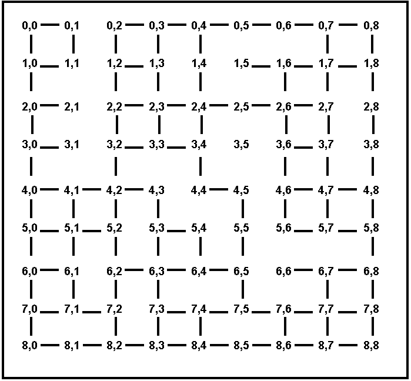

Written Assignment 1
The assignment should be submitted via Blackboard.
Question 1
Max: 20 Points
Consider the search tree shown in Figure 1. The number next to each
edge is the cost of the performing the action corresponding to that
edge. List the order in which nodes will be visited using:
- breadth-first search.
- depth-first search.
- iterative deepening search.
- uniform cost search.

Figure 1: Search Tree for Problem 1
Question 2
Max: 30 Points
A social network graph (SNG) is a graph where each vertex is a
person and each edge represents an acquaintance. In other words, an SNG
is a graph showing who knows who. For example, in the graph shown on
Figure 2, George knows Mary and John, Mary knows Christine, Peter and
George, John knows Christine, Helen and George, Christine knows Mary
and John, Helen knows John, Peter knows Mary.
The degrees of separation measure how closely connected two people are
in the graph. For example, John has 0 degrees of separation from
himself, 1 degree of separation from Christine, 2 degrees of separation
from Mary, and 3 degrees of separation from Peter.
- From among breadth-first search,
depth-first search,
iterative deepening search, and uniform cost search, which one(s)
guarantee finding the correct number of degrees of separation between
any two people in the graph? (6 Points)
- For the SNG shown in Figure 2, draw the
first three
levels of the search tree, with John as the starting point (the first
level of the tree is the root). Is there a one-to-one correspondence
between nodes in the search tree and vertices in the SNG? Why, or why
not? In your answer here, you should assume that the search algorithm
does not try to avoid revisiting the same state. (6 Points)
- Draw an SNG containing exactly 5 people,
where at least
two people have 4 degrees of separation between them. (6 Points)
- Draw an SNG containing exactly 5 people,
where all
people have 1 degree of separation between them. (6 points)
- In an implementation of breadth-first
search for
finding degrees of separation, suppose that every node in the search
tree takes 1KB of memory. Suppose that the SNG contains one million
people. Outline (briefly but precisely) how to make sure that the
memory required to store search tree nodes will not exceed 1GB (the
correct answer can be described in one-two lines of text). In your
answer here you are free to enhance/modify the breadth-first search
implementation as you wish, as long as it remains breadth-first (a
modification that, for example, converts breadth-first search into
depth-first search or iterative deepening search is not allowed). (6
Points)

Figure 2: A Social Network Graph
Question 3
Max: 15 Points
Figures 3 and 4 show maps where all the towns are on a
grid. Each town T has coordinates (Ti, Tj), where Ti Tj are
non-negative integers. We use the term Euclidean distance for the
straight-line distance between two towns, and the term driving distance
for the length of the shortest driving route connecting two towns. The
only roads that exist connect towns that have Euclidean (straight-line)
distance 1 from each other (however, there may be towns with Euclidean
distance 1 from each other that are NOT directly connected by a road,
for example in Figure 4).
Consider greedy search, where the node to be expanded is always the one
with the shortest Euclidean distance to the destination. Also consider
A* search, where h(n) is the Euclidean distance from n to the
destination (remember that the next node is picked not based on h(n)
but based on f(n) = g(n) + h(n)). For each of the maps showing on
Figures 3 and 4, which of the following statements is true?
- Greedy search always performs better than or the same as A*.
- Greedy search always performs worse than or the same as A*.
- Greedy search performs sometimes better, sometimes worse,
and sometimes
the same as A*, depending on the start and end states.
Justify your answer. For the purposes of this question, the performance
of a search algorithm is simply measured by the number of nodes visited
by that algorithm. Note that you have to provide separate answers for
Figure 3 and for Figure 4.

Figure 3. A map of cities on a fully connected grid. Every city is
simply named by its coordinates.

Figure 4. A map of cities on a partially connected grid. Every city is
simply named by its coordinates.
Question 4
Max: 20 Points
Figure 5. A search graph showing states and costs of moving from one state to another. Costs are undirected.
Consider
the search space shown in Figure 5. D is the only goal state. Costs are
undirected. For each of the following heuristics, determine if it is
admissible or not. For non-admissible heuristics, modify their values
as needed to make them admissible.
Heuristic 1:
h(A) = 5
h(B) = 30
h(C) = 20
h(D) = 0
h(E) = 10
h(F) = 0
Heuristic 2:
h(A) = 15
h(B) = 5
h(C) = 10
h(D) = 0
h(E) = 0
h(F) = 0
Heuristic 3:
h(A) = 35
h(B) = 30
h(C) = 20
h(D) = 0
h(E) = 0
h(F) = 50
Heuristic 4:
h(A) = 8
h(B) = 5
h(C) = 3
h(D) = 5
h(E) = 5
h(F) = 0
Question 5
Max: 15 Points
Consider
a search space, where each state can be red, green, blue, yellow, or
black. Multiple states may have the same color. The goal is to reach
any black state. Here are some rules on the successors of different
states, based on their color:
- Any path between a red and a green state has cost >= 20.
- Any path between a red and a blue state has cost >= 30.
- Any path between a blue and a yellow state has cost >= 40.
- Any path between a green and a yellow state has cost >= 50.
- Any path between a red and a yellow state must go through a green or blue state.
- Any path connecting a red, green, or blue state to a black state must go through a yellow state.
Define
the best admissible heuristic H that you can, using the above
information. H should assign a value to a node based on the color of
that node's state.H(red) =
H(green) =
H(blue) =
H(yellow) =
H(black) =
Question 6 (Extra Credit)
Max: 15 Points
 Figure 6. An example of a start state (left) and the goal state (right) for the 24-puzzle.
Figure 6. An example of a start state (left) and the goal state (right) for the 24-puzzle.
The
24-puzzle is an extension of the 8-puzzle, where there are 24 pieces,
labeled with the numbers from 1 to 24, placed on a 5x5 grid. At each
move, a tile can move up, down, left, or right, but only if the
destination location is currently empty. For example, in the start
state shown above, there are three legal moves: the 12 can move down,
the 22 can move left, or the 19 can move right. The goal is to achieve
the goal state shown above. The cost of a solution is the number of
moves it takes to achieve that solution.
For some initial states, the shortest solution is longer than 100 moves.
For all initial states, the shortest solution is at most 208 moves.
An additional constraint is that, in any implementation, storing a search node takes 1000 bytes, i.e., 1KB of memory.
Consider breadth-first search, depth-first search, iterative deepening search, uniform cost search, A*, and IDA*.
(a):
Which (if any), among those methods, can guarantee that you will never
need more than 50KB of memory to store search nodes? Briefly justify
your answer.
(b):
Which (if any), among those methods, can guarantee that you will never
need more than 1200KB of memory to store search nodes? Briefly justify
your answer.
(c): Which method would you recommend as providing all these features together?
- acceptable space (memory) requirements.
- best hope of obtaining good running time.
- guaranteed optimality of any found solution.
Briefly justify your answer.
Other Instructions
- The answers can be typed as a document or handwritten and
scanned.
- Accepted document formats are (.pdf, .doc or
.docx). Please do not submit
.txt files. If you are using OpenOffice or LibreOffice, make sure to
save as .pdf or .doc
- If
you are scanning handwritten documents make sure to scan it at a
minimum of 600dpi and save as a .pdf or .png file.
- If there are multiple files in your submission, zip them
together and submit the .zip file.